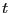

The complete C program, mdlj.c, contains a complete implementation of the Lennard-Jones force routine and the velocity-Verlet integrator. Compilation instructions appear in the header comments. Let us now consider some sample results from mdlj.c. First, mdlj.c includes an option that outputs a brief summary of the command line options available:
cfa@abrams01:/home/cfa>mdlj -h
mdlj usage:
mdlj [options]
Options:
-N [integer] Number of particles
-rho [real] Number density
-dt [real] Time step
-rc [real] Cutoff radius
-ns [real] Number of integration steps
-so Short-form output (unused)
-T0 [real] Initial temperature
-fs [integer] Sample frequency
-sf [a|w] Append or write config output file
-icf [string] Initial configuration file
-seed [integer] Random number generator seed
-h Print this info.
cfa@abrams01:/home/cfa>
Let us run mdlj.c for 512 particles and 1000 time-steps at a density of 0.85 and an initial temperature of 2.5. We will pick a relatively conservative (small) time-step of 0.001. We will not specify an input configuration, instead allowing the code to create initial positions on a cubic lattice. Here is what we see in the terminal:
cfa@abrams01:/home/cfa/dxu/che800-002/md1/T0=2.0>../../mdlj -N 512 -fs 10 -ns 1000 -sf w -T0 2.5 -rho 0.85 -rc 2.5 # NVE MD Simulation of a Lennard-Jones fluid # L = 8.44534; rho = 0.85000; N = 512; rc = 2.50000 # nSteps 1000, seed 23410981, dt 0.00100 # step PE KE TE drift T P 0 -2662.98197 1919.36147 -743.62050 3.52596e-07 2.49917 4.28921 1 -2661.06414 1917.44274 -743.62140 1.56869e-06 2.49667 4.30335 2 -2657.85692 1914.23397 -743.62296 3.66100e-06 2.49249 4.32697 3 -2653.34343 1909.71825 -743.62517 6.64471e-06 2.48661 4.36017 4 -2647.49960 1903.87154 -743.62807 1.05355e-05 2.47900 4.40307 5 -2640.29423 1896.66259 -743.63164 1.53466e-05 2.46961 4.45584 6 -2631.68894 1888.05303 -743.63591 2.10836e-05 2.45840 4.51868 7 -2621.63837 1877.99751 -743.64086 2.77377e-05 2.44531 4.59184 8 -2610.09114 1866.44448 -743.64666 3.55346e-05 2.43027 4.67548 9 -2596.98921 1853.33668 -743.65253 4.34344e-05 2.41320 4.76991 10 -2582.27118 1838.61192 -743.65927 5.24918e-05 2.39403 4.87544 11 -2565.87073 1822.20481 -743.66592 6.14413e-05 2.37266 4.99241 12 -2547.72317 1804.05002 -743.67316 7.11682e-05 2.34902 5.12119 ^CEach line of output after the header information corresponds to one time-step. The first column is the time-step, the second the potential energy, the third the kinetic energy, the fourth the total energy, the fifth the ``drift,'' the sixth the instantaneous temperature (Eq. 146), and seventh the instantaneous pressure (Eq. 94).
The drift is output to assess the stability of the explicit
integration. As a rule of thumb, we would like to keep the drift to
below 0.01% of the total energy. The drift reported by mdlj.c
is computed as
|
|
cfa@abrams01:/home/cfa/dxu/che800-002/md1/T0=2.0>ls *.xyz 0.xyz 20.xyz 300.xyz 410.xyz 520.xyz 630.xyz 740.xyz 850.xyz 960.xyz 10.xyz 200.xyz 310.xyz 420.xyz 530.xyz 640.xyz 750.xyz 860.xyz 970.xyz 100.xyz 210.xyz 320.xyz 430.xyz 540.xyz 650.xyz 760.xyz 870.xyz 980.xyz 110.xyz 220.xyz 330.xyz 440.xyz 550.xyz 660.xyz 770.xyz 880.xyz 990.xyz 120.xyz 230.xyz 340.xyz 450.xyz 560.xyz 670.xyz 780.xyz 890.xyz 130.xyz 240.xyz 350.xyz 460.xyz 570.xyz 680.xyz 790.xyz 90.xyz 140.xyz 250.xyz 360.xyz 470.xyz 580.xyz 690.xyz 80.xyz 900.xyz 150.xyz 260.xyz 370.xyz 480.xyz 590.xyz 70.xyz 800.xyz 910.xyz 160.xyz 270.xyz 380.xyz 490.xyz 60.xyz 700.xyz 810.xyz 920.xyz 170.xyz 280.xyz 390.xyz 50.xyz 600.xyz 710.xyz 820.xyz 930.xyz 180.xyz 290.xyz 40.xyz 500.xyz 610.xyz 720.xyz 830.xyz 940.xyz 190.xyz 30.xyz 400.xyz 510.xyz 620.xyz 730.xyz 840.xyz 950.xyz cfa@abrams01:/home/cfa/dxu/che800-002/md1/T0=2.0>Each one of these files is a configuration snapshot, and contains the position of each particle. The format of each data file is special: it is called the ``XYZ'' format (this is a standard format for many simulation programs). The filenames indicate which snapshot a file is; the number is the time-step value. Look inside one of the files, 690.xyz:
cfa@abrams01:/home/cfa/dxu/che800-002/md1/T0=2.0>more 690.xyz 512 1 16 0.29604446 0.56828714 0.37752815 -1.30786300 1.84221403 -0.89413789 16 1.21401795 8.19177706 0.33515333 3.52032041 -0.81317122 1.23241312 16 2.64726066 0.82254281 0.26994972 -0.50630797 0.93443275 1.81549173 16 3.75202252 0.06731821 0.39268752 1.14238124 0.02215183 0.43795406 16 4.62876356 0.70002120 0.97873282 -1.09076342 0.93155434 0.67508513 16 5.32461628 0.72950028 0.14052347 1.70998632 -0.86727858 0.03644588 16 6.18785137 1.40475117 8.26593130 1.25736693 0.75750213 -1.78288755 16 7.56095527 0.53604317 0.71204718 2.35604054 0.69772173 0.63651689 16 0.84782080 1.61955526 8.37085344 0.73714470 -0.05463901 0.04286659 16 1.68195240 1.15978775 0.40224323 -2.07249584 -0.98665932 -0.17256677 16 2.90316975 1.71194098 0.82270713 -1.44619783 2.35862108 -0.62228759 16 3.64445686 1.16196197 0.92857556 -1.17480938 -1.88716489 -0.75592199 16 4.63278427 1.47318092 0.01705540 1.40835198 -0.48737538 -0.29628750 16 6.14017777 2.46476252 0.04160396 0.31157778 3.21760722 1.10011638 16 7.36957085 1.92449651 0.87918692 -0.13392746 -0.59350997 0.47063528 16 8.19214702 1.21748389 1.23876905 1.17032561 -0.99116310 -3.36639536 16 1.31101056 2.32117258 0.60909154 0.23149412 1.08341509 1.35597275 16 2.08284899 2.56390254 0.07651616 2.75209335 0.31391146 -0.48580440 16 3.05603350 2.77944216 0.43924763 -2.05687178 -1.56404114 0.58830945 16 3.89647173 2.24282063 0.44115397 -0.77140624 -1.99094522 0.41455603 ^C cfa@abrams01:/home/cfa/dxu/che800-002/md1/T0=2.0>
The first line contains two numbers: The number of particles (512) and
a ``flag'' which indicates whether velocities are included. (Note:
this is actually not the standard XYZ format as originally defined;
most programs that use the XYZ format don't care about velocities.)
Then a blank line appears - this is actually a line that is reserved
for a descriptive title of the configuration. I am just too lazy to
put one. Then, the actual configuration data begins: We have  ,
,
 , and
, and  components of the position and velocity vectors for each
particle, one per line. The number ``16'' at the beginning designates
the ``type'' as an atomic number; for simplicity, I have decided to
call all of my particles sulfur. (XYZ format is often used for
atomically-specific configurations.) The functions xyz_out()
and xyz_in() write and read this format, respectively, in mdlj.c. We will use these functions in other programs as well,
typically those which analyze configuration data. Examples of
such analysis codes are the subjects of the next two sections.
components of the position and velocity vectors for each
particle, one per line. The number ``16'' at the beginning designates
the ``type'' as an atomic number; for simplicity, I have decided to
call all of my particles sulfur. (XYZ format is often used for
atomically-specific configurations.) The functions xyz_out()
and xyz_in() write and read this format, respectively, in mdlj.c. We will use these functions in other programs as well,
typically those which analyze configuration data. Examples of
such analysis codes are the subjects of the next two sections.
At this point, you can't do much with all this data, except appreciate just how much data an MD code can produce. It is not unusual nowadays for researchers to use MD to produce hundreds of gigabytes of configuration data in order to write a single paper. It leads one to think that perhaps a lesson on handling large amounts of data is appropriate for a course on Molecular Simulation; however, I'll forego that for now by trying to keep our sample exercises small.
One thing we can do with this data is make nice pictures using VMD. (I showed you this in class - a tutorial will appear soon.) Below are two renderings, one of the initial snapshot, and the other at time  = 450. Notice how the initially perfect crystalline lattice has been wiped out.
 |
|
|